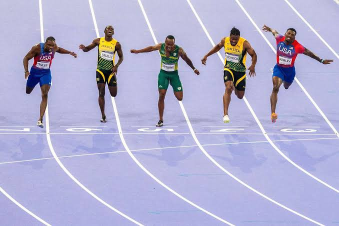
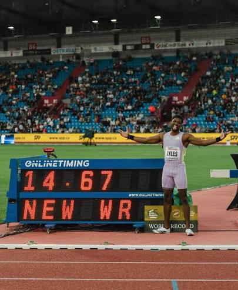
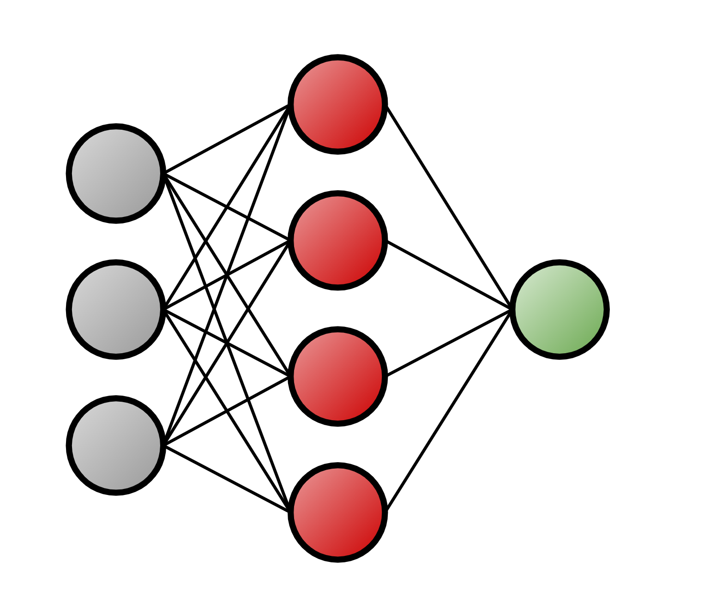
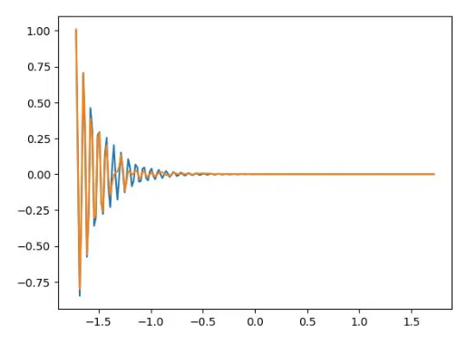

I'm a student who makes machine learning applications.
I also make physical simulations and games. Take a look at my projects below.


Stryder
Whether it's a season performance trend or a 10m splits in a 100m race, statistics are essential for improving performance in track (for example, speed endurance or acceleration). However, collecting such data is difficult: hand-timing is inconvenient and requires a partner, and accurate timing systems are too expensive.
Stryder is the solution: a sensor-driven smartwatch timing and data analysis app for sprinters and hurdlers.
How will it work?
Stryder measures time by detecting strides and sampling user location to keep a running distance total, which is continuously updated to eventually measure the time elapsed once the user crosses the finish line. Stride detection is done primarily using the accelerometer and gyroscope.
v1.0 features
- Simple approach to stride detection (ML-driven approach later)
- Sensor fusion with GPS for more stability
- Simple graphs to track individual race performance
- 100m and 400m races
Currently working on shipping v1.0, aiming for under 7% relative MSE.
Machine Learning




Simulations


Games